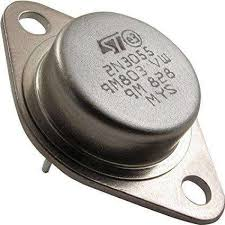
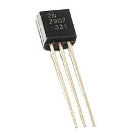

Active Components
NPN SMD Transistor
Part No.: BC846B
Specifications: VCEO 65V, IC 100mA, hFE 100-300
Application: Switching Applications, Signal Amplification, Digital Logic Circuits
Download DatasheetNPN SMD Transistor
Part No.: BC847B
Specifications: VCEO 45V, IC 100mA, hFE 110-800
Application: General Switching Applications, Low-Frequency Signal Amplification
Download DatasheetPNP SMD Transistor
Part No.: BC856B
Specifications: VCEO -65V, IC -100mA, hFE 110-800
Application: Low-Power Switching, Signal Amplification, Analog Circuits
Download DatasheetNPN Power Transistor
Part No.: 2N2222A
Specifications: VCEO 40V, IC 800mA, hFE 100-300
Application: Power Switching, Audio Amplifiers, Motor Drivers
Download DatasheetNPN Power Transistor
Part No.: 2N3055
Specifications: VCEO 60V, IC 15A, hFE 20-70
Application: Power Amplifiers, Switching Regulators, Motor Control
Download DatasheetPNP General-Purpose Transistor
Part No.: 2N2907
Specifications: VCEO -60V, IC -600mA, hFE 100-300
Application: General Switching, Amplifiers, Signal Processing
Download Datasheet
N-Channel JFET
Part No.: JN8048T1G
Specifications: VDS 30V, VGS ±20V, ID 0.5A, VGS(off) -2V to -6V, SMD-0805 Package
Application: Amplifiers, Switching Circuits, Voltage-Controlled Resistors
Download DatasheetN-Channel JFET
Part No.: JN439T1G
Specifications: VDS 35V, VGS ±25V, ID 0.3A, VGS(off) -1V to -4V, SOT-23 Package
Application: Signal Processing, Low-Noise Amplifiers, Voltage-Controlled Resistors
Download Datasheet
N-Channel JFET
Part No.: 2N5458SMD
Specifications: VDS 25V, VGS ±20V, ID 0.1A, VGS(off) -2V to -5V, SOT-23 Package
Application: Amplifiers, Oscillators, Analog Switches
Download Datasheet
P-Channel JFET
Part No.: JF1005P
Specifications: VDS -60V, VGS ±30V, ID -1A, VGS(off) -3V to -8V, Through-Hole Axial Package
Application: Analog Switches, Variable Gain Amplifiers, Digital Logic Circuits
Download Datasheet
N-Channel JFET
Part No.: JF1023N
Specifications: VDS 50V, VGS ±25V, ID 0.8A, VGS(off) -2V to -6V, TO-92 Package
Application: Low-Noise Amplifiers, Oscillators, Voltage-Controlled Attenuators
Download Datasheet
N-Channel JFET
Part No.: 2N5486
Specifications: VDS 30V, VGS ±20V, ID 0.1A, VGS(off) -0.5V to -7V, TO-92 Package
Application: RF Amplifiers, Switching Circuits, High-Frequency Oscillators
Download DatasheetLogic Level N-Channel MOSFET
Part No.: IRLML6344
Specifications: VDS 30V, ID 6.3A, RDS(on) 0.029Ω
Application: Switching Applications, DC-DC Converters, Power Management Systems
Download DatasheetLogic Level N-Channel MOSFET
Part No.: IRLML6345
Specifications: VDS 30V, ID 7.3A, RDS(on) 0.019Ω
Application: Low Power Switching, Motor Control, DC-DC Converters
Download Datasheet
Logic Level N-Channel MOSFET
Part No.: IRLZ44N
Specifications: VDS 55V, ID 47A, RDS(on) 0.022Ω
Application: Power Switching, High-Speed Switching, Motor Drivers
Download Datasheet
Power N-Channel MOSFET
Part No.: IRF540N
Specifications: VDS 100V, ID 33A, RDS(on) 0.044Ω
Application: Power Supplies, Motor Drivers, Audio Amplifiers
Download DatasheetPower N-Channel MOSFET
Part No.: IRFZ44N
Specifications: VDS 55V, ID 49A, RDS(on) 0.022Ω
Application: Power Supplies, DC-DC Converters, Motor Drivers
Download Datasheet
Power N-Channel MOSFET
Part No.: IRFP260N
Specifications: VDS 200V, ID 50A, RDS(on) 0.04Ω
Application: Power Supplies, High-Power Motor Drivers, Amplifiers
Download DatasheetPassive Components
Resistor
Part No.: R9101
Specifications: 10kΩ, 1%, 0603
strong>Application: Voltage Division, Biasing Download DatasheetResistor
Part No.: R4702
Specifications: 470Ω, 5%, 0805
Application: Current Limiting, Pull-up/Pull-down
Download DatasheetResistor
Part No.: R2203
Specifications: 2.2kΩ, 1%, 0402
Application: Signal Conditioning, Voltage Sensing
Download DatasheetCarbon Film Through-Hole Resistor
Part No.: R1K
Specifications: 1kΩ, ±5%, 0.25W, Axial Package
Application: Current Limiting, Biasing, Feedback Networks
Download DatasheetCarbon Film Through-Hole Resistor
Part No.: R10K
Specifications: 10kΩ, ±5%, 0.25W, Axial Package
Application: Signal Conditioning, Pull-Up Resistors
Download DatasheetMetal Film Through-Hole Resistor
Part No.: R4R7
Specifications: 4.7Ω, ±1%, 0.5W, Axial Package
Application: Current Sensing, Voltage Dividers
Download DatasheetPower Inductor
Part No.: L2205
Specifications: 10µH, 1A, 2205 Package
Application: Switching Power Supplies, Filters
Download DatasheetShielded Power Inductor
Part No.: L3308
Specifications: 33µH, 2A, 3308 Package
Application: DC-DC Converters, EMI Suppression
Download Datasheet
High Current Inductor
Part No.: L4706
Specifications: 47µH, 0.8A, 4706 Package
Application: Signal Filtering, Energy Storage
Download Datasheet
Power Inductor
Part No.: L1
Specifications: 100µH, 5A, Axial Package
Application: DC-DC Converters, EMI Filters
Download DatasheetPower Inductor
Part No.: L2
Specifications: 220µH, 3A, Axial Package
Application: Power Supplies, Signal Filtering
Download Datasheet
Choke Inductor
Part No.: L3
Specifications: 470µH, 2A, Axial Package
Application: EMI Suppression, DC-DC Converters
Download Datasheet
Trimmer Potentiometer
Part No.: VR1K2R-SMD
Specifications: 1kΩ, 0.1W, 0805 Package, Single-Turn
Application: Calibration, Signal Adjustment, Voltage Regulation
Download DatasheetTrimmer Potentiometer
Part No.: VR5K-SMD
Specifications: 5kΩ, 0.1W, 1206 Package, Multi-Turn
Application: Calibration, Current Control, Voltage Division
Download DatasheetTrimmer Potentiometer
Part No.: VR10K-SMD
Specifications: 10kΩ, 0.2W, 0603 Package, Single-Turn
Application: Signal Adjustment, Feedback Circuits, Biasing
Download DatasheetAudio Potentiometer
Part No.: P10K-Audio
Specifications: 10kΩ, 0.5W, Axial Package, 10-Turn
Application: Audio Volume Control, User Interface Controls, Adjustable Gain Stages
Download Datasheet
Audio Potentiometer
Part No.: P5K-Audio
Specifications: 5kΩ, 0.5W, Axial Package, 10-Turn
Application: Audio Volume Control, Tone Adjustment, Signal Processing
Download DatasheetAudio Potentiometer
Part No.: P50K-Audio
Specifications: 50kΩ, 0.5W, Axial Package, 10-Turn
Application: Audio Volume Control, User Interface Controls, Adjustable Gain Stages
Download Datasheet
Ceramic Capacitor
Part No.: C0603C104K5RACTU
Specifications: 100nF, 50V, 0603 Package, X7R Ceramic
Application: Decoupling, Filtering, Timing Circuits
Download Datasheet
SMD Capacitor
Part No.: C1020
Specifications: 1µF, 16V, 0805 Package
Application: Filtering, Decoupling, Energy Storage
Download Datasheet
SMD Capacitor
Part No.: C2040
Specifications: 10µF, 25V, 1206 Package
Application: Decoupling, Power Supply Smoothing, Bypassing
Download Datasheet
Electrolytic Capacitor
Part No.: C1N4700
Specifications: 470µF, 25V, Axial Package, Aluminum Electrolytic
Application: Power Supply Filtering, Energy Storage, Smoothing Circuits
Download DatasheetCeramic Capacitor
Part No.: C2N100
Specifications: 100nF, 50V, Radial Package, Ceramic
Application: Decoupling, Signal Filtering, Noise Suppression
Download DatasheetPolypropylene Film Capacitor
Part No.: C3P470
Specifications: 470nF, 100V, Radial Package, Polypropylene Film
Application: High-Frequency Filtering, Signal Coupling, Pulse Applications
Download DatasheetDC-DC Converter Module
Part No.: TDC1005
Specifications: 5V In, 12V Out, 1A, 100kHz, SMD-0805 Package
Application: Portable Devices, Power Management Systems
Download DatasheetDC-DC Converter Module
Part No.: TDC2005
Specifications: 5V In, 12V Out, 2A, 150kHz, SMD-0805 Package
Application: Portable Devices, Power Management, Battery-Powered Systems
Download DatasheetDC-DC Converter Module
Part No.: TDC4005
Specifications: 12V In, 5V Out, 1.5A, 100kHz, SMD-0805 Package
Application: Power Regulation, Voltage Conversion, Automotive Systems
Download Datasheet
Power Transformer
Part No.: TP300-12
Specifications: 120V AC In, 12V AC Out, 300W, Laminated Silicon Steel, Axial Package
Application: Power Supply Units, Audio Equipment, Industrial Machinery
Download DatasheetPower Transformer
Part No.: TP500-24
Specifications: 240V AC In, 24V AC Out, 500W, Laminated Silicon Steel, Axial Package
Application: Power Supply Units, Industrial Equipment, UPS Systems
Download DatasheetPower Transformer
Part No.: TP1000-48
Specifications: 480V AC In, 48V AC Out, 1000W, Laminated Silicon Steel, Axial Package
Application: High-Power Systems, Electrical Distribution, Industrial Machinery
Download DatasheetSchottky Diode
Part No.: SS14
Specifications: 40V, 1A, SMC Package
Application: Power Supplies, Reverse Current Protection
Download Datasheet
Schottky Diode
Part No.: SS24
Specifications: 40V, 2A, SMC Package
Application: DC-DC Converters, Low Voltage Rectification
Download Datasheet
Fast Recovery Diode
Part No.: FR107
Specifications: 1000V, 1A, SMA Package
Application: High Voltage Rectification, Free-Wheeling Diode Applications
Download DatasheetRectifier Diode
Part No.: 1N4007
Specifications: 1000V, 1A, DO-41 Package
Application: Power Supplies, AC to DC Conversion
Download Datasheet
Rectifier Diode
Part No.: 1N5408
Specifications: 1000V, 3A, DO-201 Package
Application: High Voltage Power Supplies, AC to DC Conversion, Industrial Equipment
Download DatasheetSchottky Rectifier Diode
Part No.: 1N5819
Specifications: 40V, 1A, DO-41 Package
Application: Low Voltage Rectification, High-Speed Switching, Reverse Current Protection
Download Datasheet